Before you begin
Be allied with San d'Oria, have Rank 8, and finish the preceding required story steps. Raise Rank Points if the mission is not offered.
Accept the mission before following its route. If the guard does not offer it, finish your current mission and any closing scenes, then raise Rank Points with crystals at a Conquest guard if required.
Items and key items
| Item — open for its source | Type | Where it comes from |
|---|---|---|
| Drops of Amnio | Key item | Examine the Fountain of Kings at Quicksand Caves, map 2 (G-14), after defeating Honor and Valor. |
People in this mission

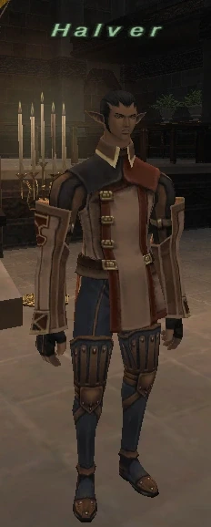
Walkthrough
Attend the briefing
- Accept Coming of Age. Enter Chateau d’Oraguille for the scene, then speak to Halver.
Find the Fountain of Kings
- Enter Quicksand Caves from Eastern Altepa Desert (H-10). On map 2, drop at (E-11) and continue to the Fountain of Kings at (G-14).
- Prepare before examining the fountain: Honor and Valor appear together. Defeat both, then examine the Fountain of Kings again for Drops of Amnio.
Finish the ceremony
- Return to Halver in Chateau d’Oraguille with Drops of Amnio.
- Wait at least one real minute after that scene, then enter Northern San d’Oria from another zone for the required final scene. This scene unlocks further mission-guard interaction.
Important notes
- Zenith’s reviewed source uses a 60-second wait. You do not need to wait for Japanese midnight.
Completion and reward
Rank Points
Area maps
Open a zone below, then select a map to enlarge it. Match the named floors and grid coordinates in the steps; these are reference area maps, not a live position tracker.
Chateau d'Oraguille

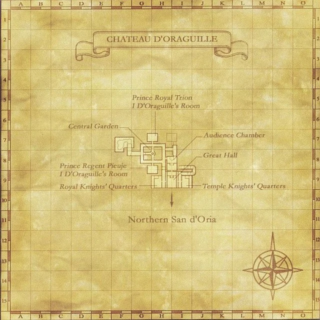

Quicksand Caves

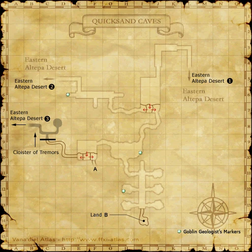


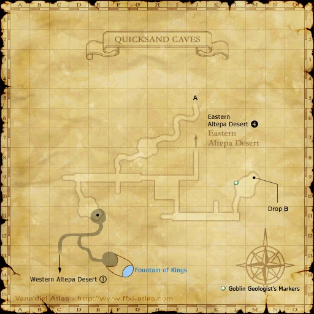


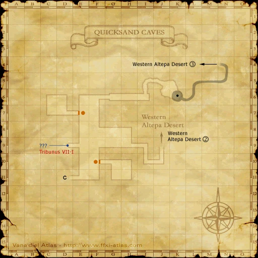


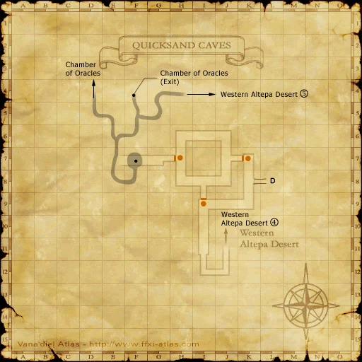


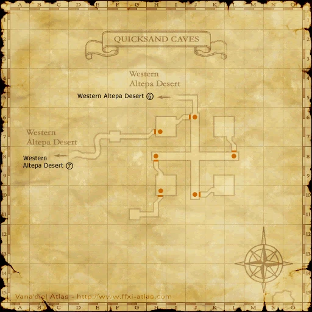


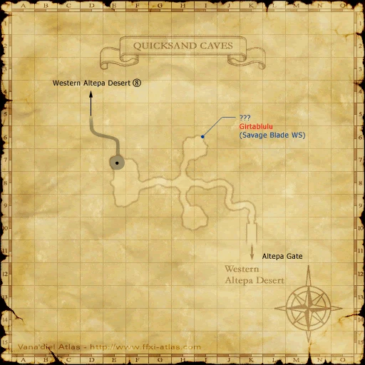


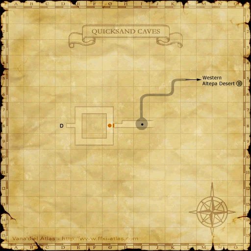


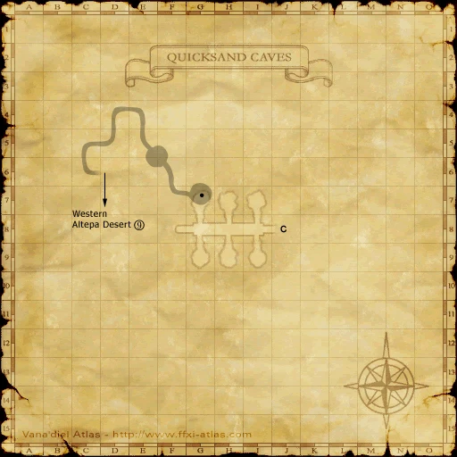

Eastern Altepa Desert

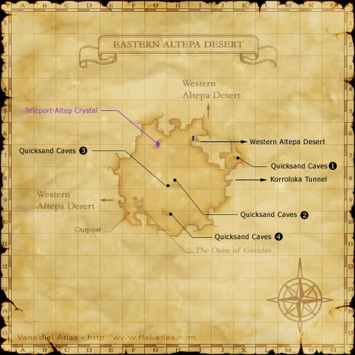

Northern San d'Oria


References
Native mission script used by the Zenith baseline · HorizonXI route and map reference
Written for Zenith from the reviewed mission steps. Battlefield conditions follow the server’s entry message; Horizon-exclusive wardrobe rewards are not part of these rewards.
Additional level-75 reference
|
Walkthrough
- If your rank bar is empty, trading four and half stacks of crystals will give the necessary rank points for this mission. Instead of trading crystals, you may repeat Mission 1-2 9 times with the bat fangs.
- After accepting this mission go talk to Halver in Chateau d'Oraguille. After a cutscene, keep talking to Halver until he tells you to head to Quicksand Caves to get a key item.
- Now get an alliance of level 65+. Anyone under level 70 will need sneak.
- Take the H-10 entrance to Quicksand Caves in Eastern Altepa Desert and head west until you can no longer head west. At this point, you will make a left turn and head south. Drop down the hole at the end of the room. Once you land, hug the left wall and you will find yourself at the Fountain of Kings.
- Clear the room and the connecting hallway of sabotenders and antica.
- Once ready, have someone inspect the fountain, which will spawn 2 kraken type NMs, Honor and Valor.
- They will spawn inside the pool, making it very hard to pull one of them with ranged attacks.
- To pull them one at a time, go to the right or left wall, cancel Sneak, and get closer carefully so that only one of them will aggro you. They won't link.
- Valor uses Hundred Fists.
- If you have a party of magic-users, Valor is much easier to deal with.
- Honor is level 70, has about 6000 HP, and casts Paralyga and Silencega.
- A BST75 can solo Honor with two CourierCarrie jugs; come /WHM for Paralyna and bring Echo Drops.
- Both were easily trioed by two 75 BLMs and one 75 RDM by simply nuking and kiting.
- A RDM75 and NIN75 are able to duo Honor without much trouble.
- Also a WHM75 and a WAR75 can easily duo Honor.
- Both kraken are susceptible to Gravity and Bind, but resisted sleep even when using Elemental Seal.
- It is possible to fight only one and let the other one despawn while fighting the first one.
- When both are gone, inspect the fountain for a key item. (You only need to kill one.)
- Return to San d'Oria and talk to Halver. (At this point, the mission is flagged as complete in your mission log, but you cannot proceed to 8-2.)
- Wait for JP midnight, then zone to Northern San d'Oria for a cutscene. After this cutscene, the mission is complete.
Game Description
- Mission Orders
- Princess Claidie will soon celebrate her coming-of-age, and the court in d'Oraguille needs help with the ceremonies. Speak to Monarlais Halver and offer your assistance.
Adapted from Eden Wiki: Coming of Age · Contributors and history · CC BY-SA 4.0. Revision 45201. Layout, links and optional background text adapted for Zenith.